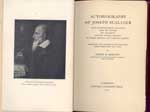
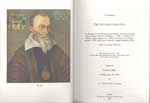

Adelaar in de wolken. De Leidse jaren van Josephus Justus Scaliger 1593-1609
Samenstelling: Paul G. Hoftijzer & Kasper van Ommen
| 10.1 | Daniel Heinsius, In obitum v. illustr. Josephi Scaligeri, Jul. Caes. a Burden |
| f., eruditorum principis, orationes duae. Accedunt Epicedia eiusdem & aliorum: effigies item ac monumentum Scaligeri & principum Veronensium aeri incisa (Leiden: Francisucus II Raphelengius, 1609). UBL 568 C 23: 1. | |
| 10.2 | Scaligerana, Thuana, Perroniana, Pithoeana, et Colomesiana, ou remarques |
| historiques, critiques, morales et littéraires de Jos. Scaliger, J. Aug. de Thou, le cardinal Du Perron, Fr. Pithou, & P. Colomie’s; avec des notes de plusieurs savans, ed. Pierre Des Maizeaux, 2 dln. (Amsterdam: Covens en Mortier, 1740). UBL 669 G 19-20. | |
|
|
|
| 10.3 | Jacob Bernays, Joseph Justus Scaliger (Berlin/London, 1855). UBL 674 C 4. |
|
|
|
| 10.4 | Lettres françaises inédites de Joseph Scaliger, ed. Philippe Tamizey de |
| Larroque (Agen/Paris, 1879). UBL 337 E 12. | |
|
|
|
| 10.5 | George W. Robinson: Autobiography of Joseph Scaliger, with |
| autobiographical selections from his letters, his testament, and the funeral orations by Daniel Heinsius and Dominicus Baudius. Translated into English for the first time, with introduction and notes (Cambridge [Mass.], 1927). UBL 2351 F 38. | |
|  | |
|
|
|
| 10.6 | Anthony Grafton, Joseph Scaliger. A study in the history of classical |
| scholarship, 2 dln. (Oxford, 1983-93). UBL, Dousazaal. | |
|
|
|
| 10.7 | Rijk Smitskamp (red.), The Scaliger collection. A collection of over 200 |
| antiquarian books by and about Josephus Justus Scaliger, with full descriptions ... (Leiden, 1993). UBL, Dousazaal. | |
|  |
| vorige pagina | |